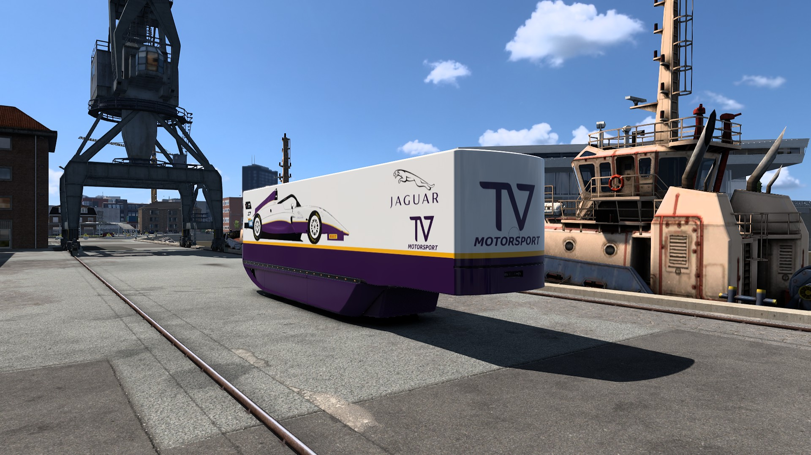
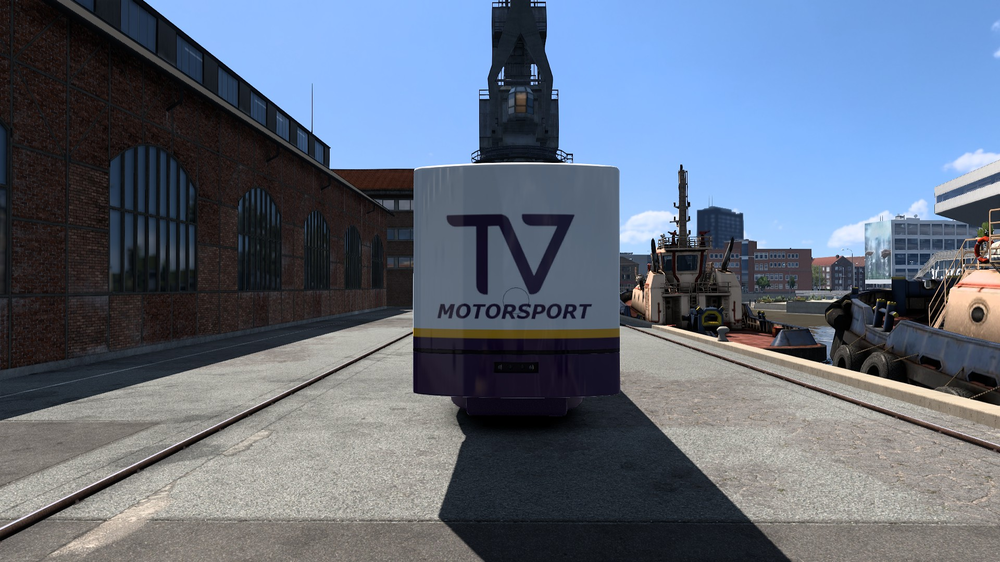
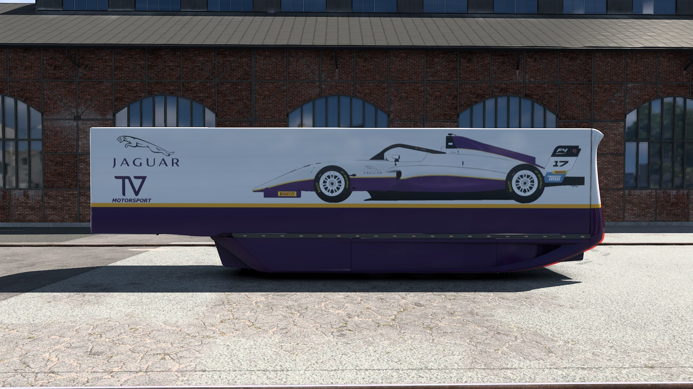
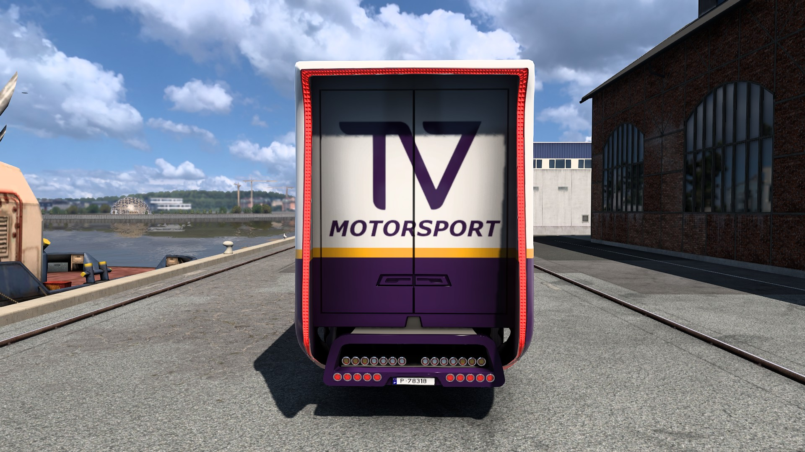
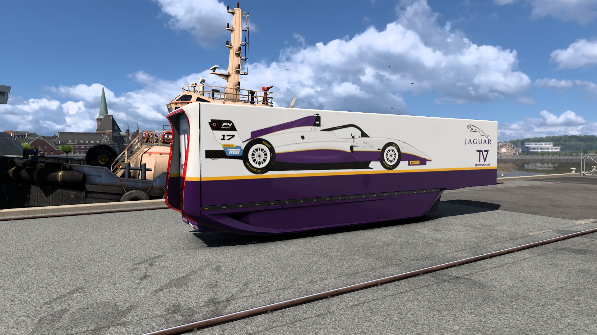
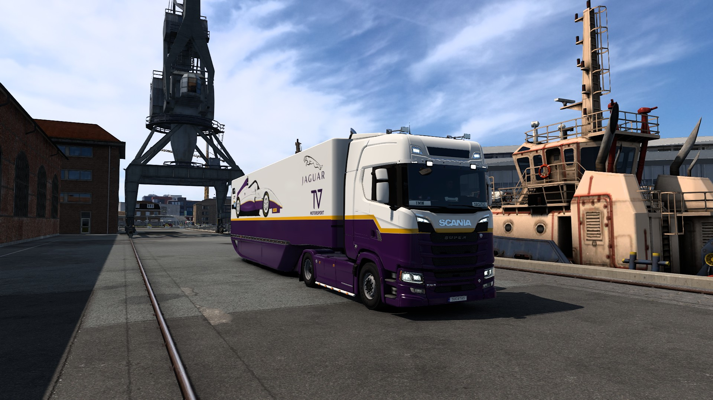
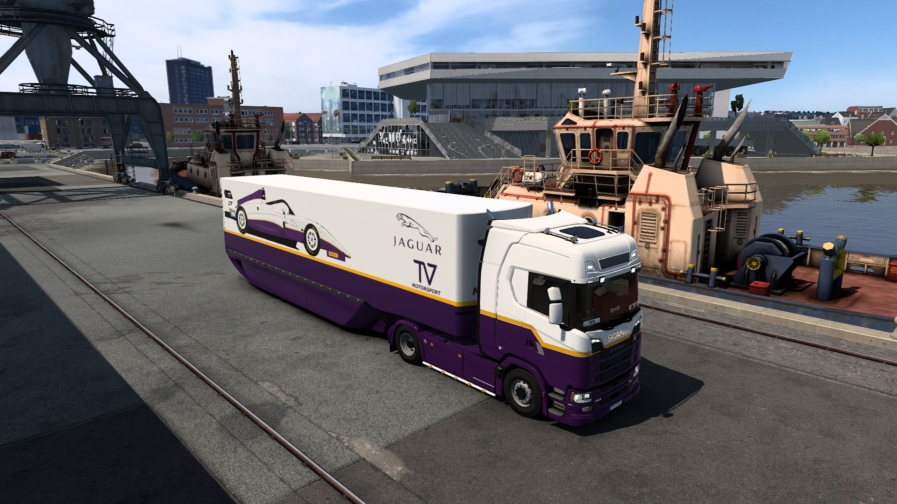

Jaguar XJR12 F4 Livery Design (⚠️ Under Construction)
Jaguar XJR12 Formula 4 Inspired Trailer Livery

Design Details
Game: Euro Truck Simulator 2
Trailer Model: MB AeroDynamic Trailer
Design Year: 2026
Design Inspiration: Jaguar XJR12 1990
Gallery






About This Design
Add detailed description of your EuroTruck livery design here. Talk about the inspiration, color choices, technical aspects, and any interesting features of the design.